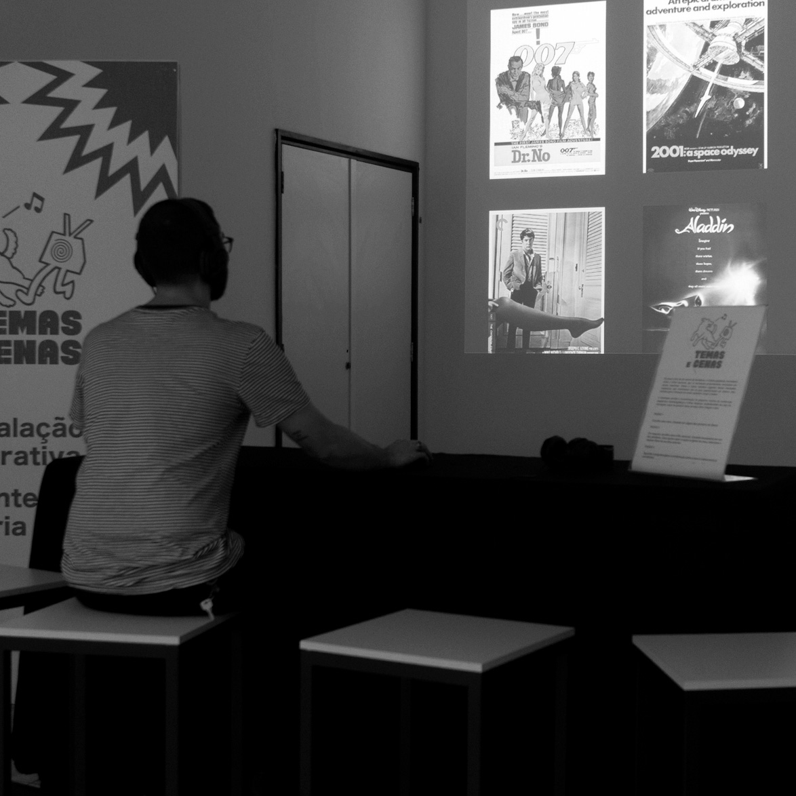
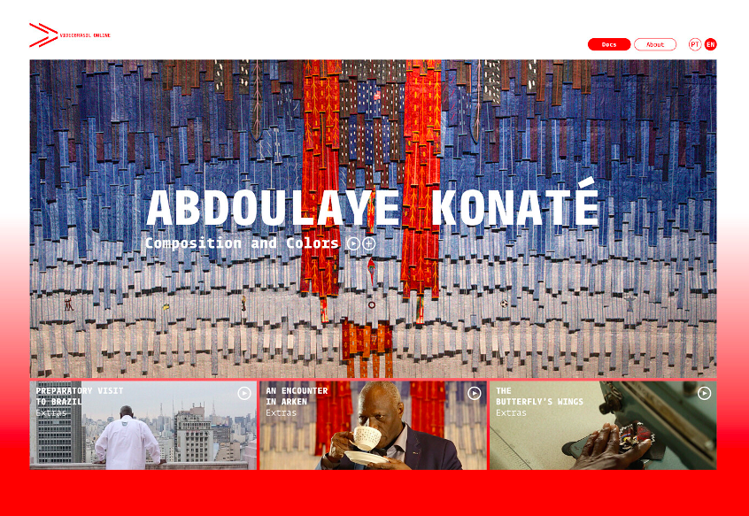
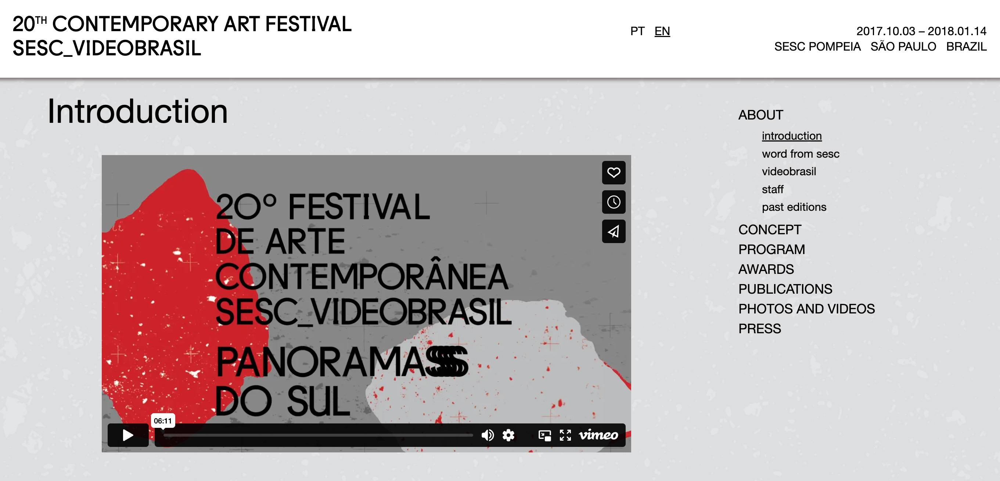
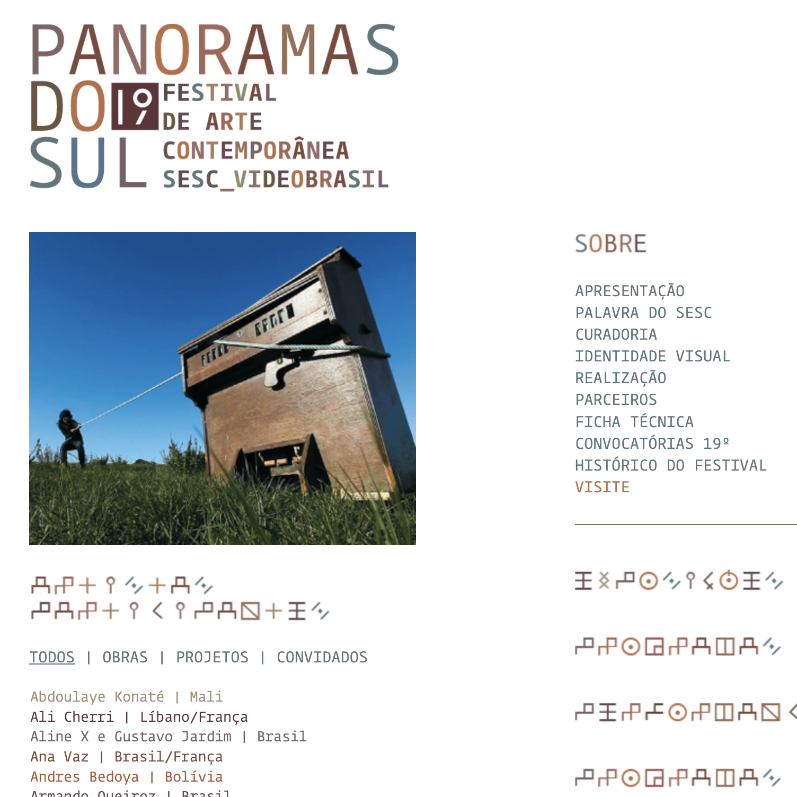

Racionais: 3 décadas de história
Art installation, Red Bull Station, São Paulo, Brazil
As part of the exhibition “Racionais: 3 décadas de história”, this mobile web app made it possible for the public to browse through Racionais' catalogue to learn more about the samples used in their songs.
Activities: Full-stack web development

Temas e Cenas
Art installation, Sesc, São Paulo, Brazil
This interactive app allowed people to swap images and soundtracks from well known movies, creating fun and unpredictable effects.
Activities: Full-stack web development, real-time audio and video encoding

videobrasil.online
Online exhibition space
A video platform that aims to increase and facilitate access to contemporary art productions in the Global South.
Activities: Full-stack web development

20th Contemporary Art Festival Sesc_Videobrasil
Activities: Full-stack web development of the festival's website
